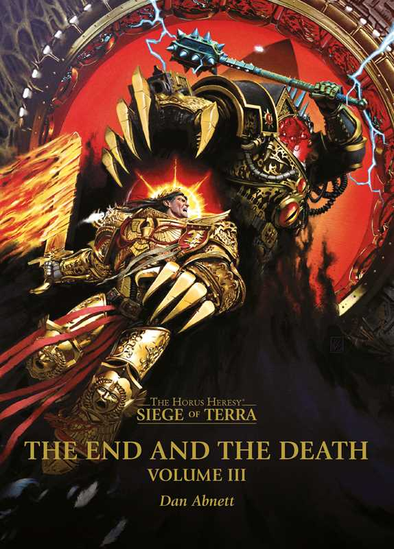

THE END AND THE DEATH: VOLUME III

Author: Dan Abnett
Format: Novel
Terra's last defences are failing as the war reaches its final confrontation. Across the Throneworld and aboard the Vengeful Spirit, the survivors struggle to shape what comes after the Siege.
Introduction reviewed against Black Library’s description on 2026-09-27. The publisher page may contain spoilers.
Publication facts: publisher source, checked 2026-09-26.
Open this work in the interactive Archive to track reading progress and explore related works.